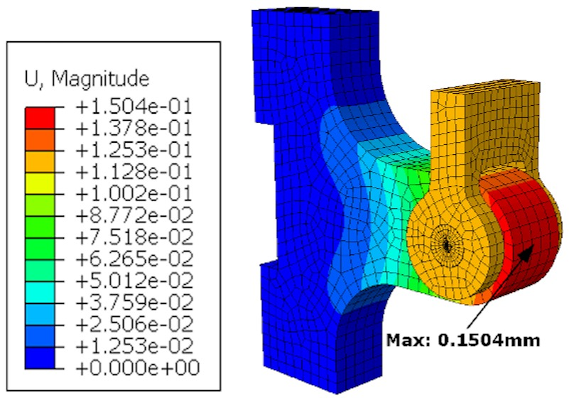
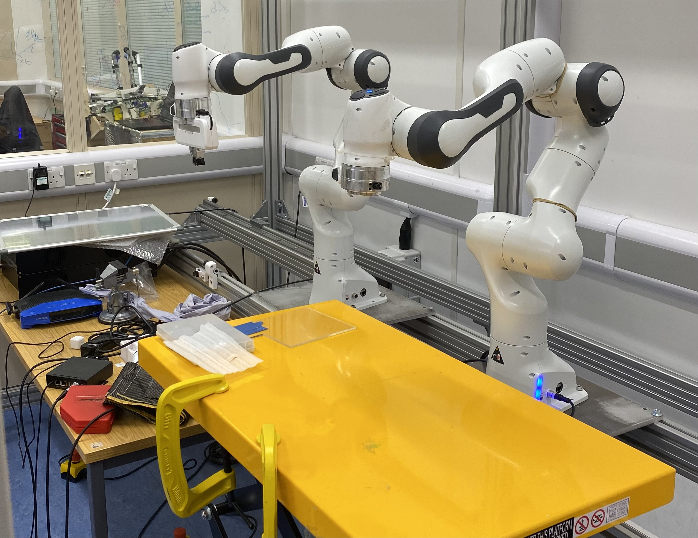
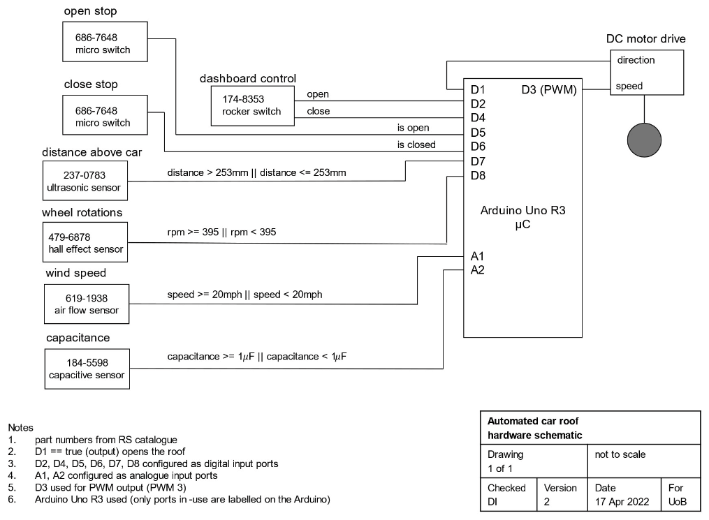
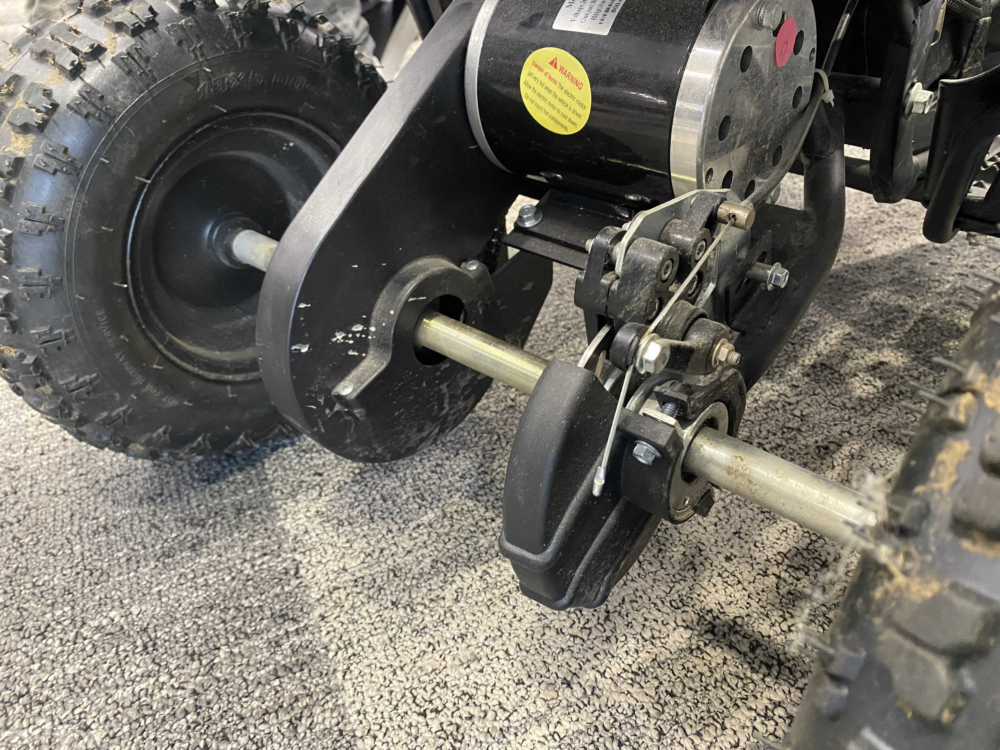

My final year thesis focused on the impact of human jaw angle on the effectiveness of Medicated Chewing Gums (MCGs). Custom experiments were designed using an Instron compression machine and adaptors mimicking the human jaw angle and its molars. The adaptors were designed on Siemens NX and manufactured in aluminium and stainless steel material. Data gathered using the designed adaptors and 'Two-bite test' on the Instron machine resulted in important conclusions about how the human mandible jaw angle affects chewing efficiency.

Conducted an FE analysis using Abaqus CAE on the structural integrity of lifting lugs of a Gas Combustion Unit. Completed a mesh convergence study which was validated with numerical solutions. Carried out an in-depth analysis into the failure characteristics of the GCU's load-bearing structural components using MATLAB.

Worked one-to-one with Dr. Dandan Zhang from the University of Bristol exploring human-robot interaction. Conducted robotic arm simulations on CoppeliaSim that followed a script that I programmed on Python. Programmed Python code that uses OpenCV library for facial recognition to remotely control a robot.

Group project focused on designing the mechatronics and roof mechanism of the Fiat 595. Selected sensors for the roof mechanism which were tested and programmed with the roof motor on Arduino IDE. Conducted mathematical modelling on MATLAB relating to the roof’s motor, gears, dampers and anticipated
aerodynamic resistance. Carried out Finite Element Analysis on Fusion 360 and roof mechanism simulation on Linkage.

Pre-requisite project to the Convertible Roof Mechanism Design project that introduced different elements of being able to successfully manufacture a high-performance component of a vehicle. The project involved interpreting industry-level catalogues to pick gear, sprocket and bearing sizes.
These selections were made using simple gear ratio, transmission and load calculations for the ATV. The assembly of the axle was modelled on Fusion 360.

Designed a wind turbine nacelle and carried out calculations involving turbine power outputs. Created a mathematical model on MATLAB that calculated wind power output based on external factors such as
wind speed, density, yaw angle, wake, and others. Conducted market research on different types of gearbox assembly which was ultimately designed on Fusion 360.